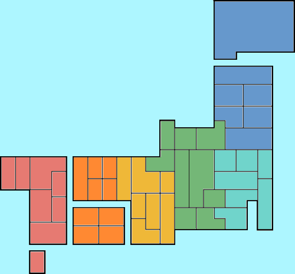

{% extends "base.html" %}
{% block head %}
<title>SloMap ○の付く日都道府県別店舗分析 選択画面 マップで見えるパチンコ・スロット取材予定</title>
{% endblock %}
{% block content %}
<div class='container'>
    <div class='row'>
        <div class='col-12'>
            <form action="{{ url_for('prefecture_post_detail') }}" method="POST">
            <h2 class="heading-011 mt-4" id="old_event_day_tag">○の付く日店舗超分析<br>お勧め機種も探せます</h2>
           
            <div class="progressbar mt-3 mb-1 py-2">
                <div class="item active">STEP.1<br>行きたい日付を選択</div>
                <div class="item ">STEP.2<br>行きたい県を選択</div>
                <div class="item">STEP.3<br>検索ボタンを押す</div>
            </div>
                <fieldset class="radio-003">
                    {% for i , (p_text,name) in enumerate(data.tag_dict.items()) %}
                        <label>
                            {% if i == 1 %}
                            <input type="radio" name="target_day" value={{name}} checked/>
                            {% else %}
                            <input type="radio" name="target_day" value={{name}} />
                            {% endif %}
                            {{ p_text }}
                        </label>
                    {% endfor %}
                </fieldset>
            
    <div class="row">
        <div class="col">
            <div class="progressbar mt-4">
                <div class="item active">STEP.1<br>行きたい日を選択</div>
                <div class="item active">STEP.2<br>行きたい県を選択</div>
                <div class="item">STEP.3<br>検索ボタンを押す</div>
            </div>
            
                <div class='col-12 p-2'>
                    <div class="japan_map p-1">
                        
                        <span class="area_btn area1" data-area="1">北海道・東北</span>
                        <span class="area_btn area2" data-area="2">関東</span>
                        <span class="area_btn area3" data-area="3">中部</span>
                        <span class="area_btn area4" data-area="4">近畿</span>
                        <span class="area_btn area5" data-area="5">中国・四国</span>
                        <span class="area_btn area6" data-area="6">九州・沖縄</span>
                        <div class="area_overlay"></div>
                        <div class="pref_area">
                            <div class="pref_list" data-list="1">
                                <div data-id="hokkaido">北海道</div>
                                <div data-id="aomori">青森県</div>
                                <div data-id="iwate">岩手県</div>
                                <div data-id="miyagi">宮城県</div>
                                <div data-id="akita">秋田県</div>
                                <div data-id="yamagata">山形県</div>
                                <div data-id="fukushima">福島県</div>
                                <div></div>
                            </div>
    
                            <div class="pref_list" data-list="2">
                                <div data-id="ibaraki">茨城県</div>
                                <div data-id="tochigi">栃木県</div>
                                <div data-id="gunma">群馬県</div>
                                <div data-id="saitama">埼玉県</div>
                                <div data-id="chiba">千葉県</div>
                                <div data-id="tokyo">東京都</div>
                                <div data-id="kanagawa">神奈川県</div>
                                <div></div>
                            </div>
    
                            <div class="pref_list" data-list="3">
                                <div data-id="">新潟県</div>
                                <div data-id="">富山県</div>
                                <div data-id="">石川県</div>
                                <div data-id="fukui">福井県</div>
                                <div data-id="yamanashi">山梨県</div>
                                <div data-id="nagano">長野県</div>
                                <div data-id="gifu">岐阜県</div>
                                <div data-id="shizuoka">静岡県</div>
                                <div data-id="aichi">愛知県</div>
                                <div></div>
                            </div>
    
                            <div class="pref_list" data-list="4">
                                <div data-id="mie">三重県</div>
                                <div data-id="shiga">滋賀県</div>
                                <div data-id="kyoto">京都府</div>
                                <div data-id="osaka">大阪府</div>
                                <div data-id="hyogo">兵庫県</div>
                                <div data-id="nara">奈良県</div>
                                <div data-id="wakayama">和歌山県</div>
                                <div></div>
                            </div>
                            
                            <div class="pref_list" data-list="5">
                                <div data-id="tottori">鳥取県</div>
                                <div data-id="shimane">島根県</div>
                                <div data-id="okayama">岡山県</div>
                                <div data-id="hiroshima">広島県</div>
                                <div data-id="yamaguchi">山口県</div>
                                <div data-id="tokushima">徳島県</div>
                                <div data-id="kagawa">香川県</div>
                                <div data-id="ehime">愛媛県</div>
                                <div data-id="kochi">高知県</div>
                                <div></div>
                            </div>
                            
                            <div class="pref_list" data-list="6">
                                <div data-id="fukuoka">福岡県</div>
                                <div data-id="saga">佐賀県</div>
                                <div data-id="nagasaki">長崎県</div>
                                <div data-id="kumamoto">熊本県</div>
                                <div data-id="oita">大分県</div>
                                <div data-id="miyazaki">宮崎県</div>
                                <div data-id="kagoshima">鹿児島県</div>
                                <div data-id="okinawa">沖縄県</div>
                            </div>
                        </div>
                    </div>
                    <select name="prefecture_name_en" class="form-select form-select-lg my-3" aria-label="prefecture select" >
                        <option selected>マップから選択可</option>
                        {% for prefecture_name_en , prefecture in data.prefecture_name_en_and_name_dict.items() %}
                            <option  value="{{ prefecture_name_en }}">{{ prefecture }}</option>
                        {% endfor %}
                    </select>
                </div>
                <div class="d-grid gap-2 col-6 mx-auto pb-3 pt-3">
                    <button class="btn btn-primary" type="submit" value="送信">検索</button>
                </div>
            </form>
        </div>
    </div>
</div>
{% endblock %}